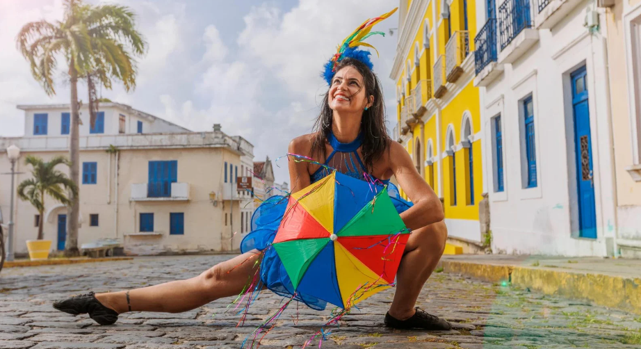
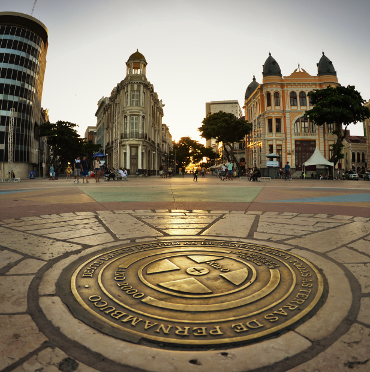
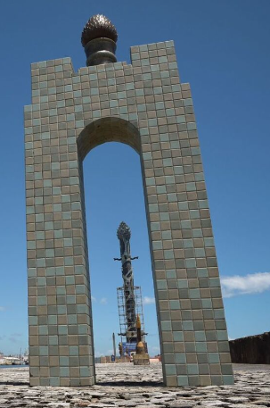

A maior metrópole do Nordeste expressa seus valores nas mais variadas formas. No lado cultural, fala alto o talento de artistas como Romero Britto, Francisco Brennand e Nelson Rodrigues; enquanto nos sons, os ritmos alegres do frevo e do maracatu, e o Galo da Madrugada - já considerado o maior bloco carnavalesco do mundo - agitam turistas das mais diversas partes do país. Para quem gosta de festas populares, conhecer Recife e Olinda, cidade vizinha, durante o Carnaval é imperdível!
A capital de Pernambuco oferece uma série de atividades e atrações que vão deixar a sua viagem ainda mais completa. O lugar é repleto de histórias e conta com pontos turísticos que valem a pena conhecer.
Conheça os pontos turísticos de Recife
Marco Zero
Começamos pela principal atração e ponto turístico de Recife: Marco Zero, localizado na Praça Rio Branco, é conhecido como local de fundação da cidade do Recife e também como ponto inicial de contagem das distâncias calculadas a partir da cidade. O lugar é um dos pontos mais importantes na capital Pernambucana, pois é também uma região de forte movimento durante o Carnaval.
Aproveite sua visita para tirar uma foto com os dois marcos (o antigo e o novo), observar a vista para o Parque de Esculturas e os edifícios do Centro Cultural da Caixa e da Associação Comercial de Pernambuco.
Se quiser fazer compras, vale a pena visitar o novo Mercado de Artesanato, que também fica no local.
A obra do artista pernambucano Cícero Dias sinaliza o local. O Centro Cultural da Caixa também fica ali por perto.
De lá, dá para ir andando até a Igreja barroca da Madre de Deus, um dos principais pontos turísticos de Recife. O lugar é banhado pelo estuário do Rio Capibaribe.
Do outro lado das águas, está um dique que acomoda o Parque das Esculturas de Francisco Brennand, outro renomado artista de Recife. A travessia custa em média R$ 10 por pessoa.
Conheça a Giro
O Giro Recife foi lançado em 2010 para ajudar os visitantes a conhecer da melhor forma Recife. Aqui você encontra informações dos principais pontos turísticos, hospedagem, comidas típicas e muito mais para a sua viagem!